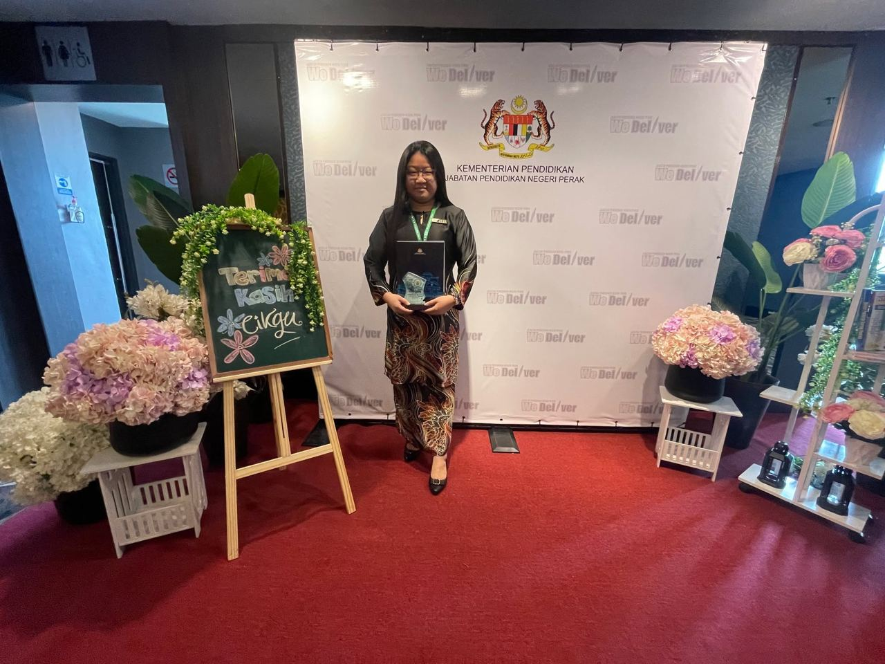
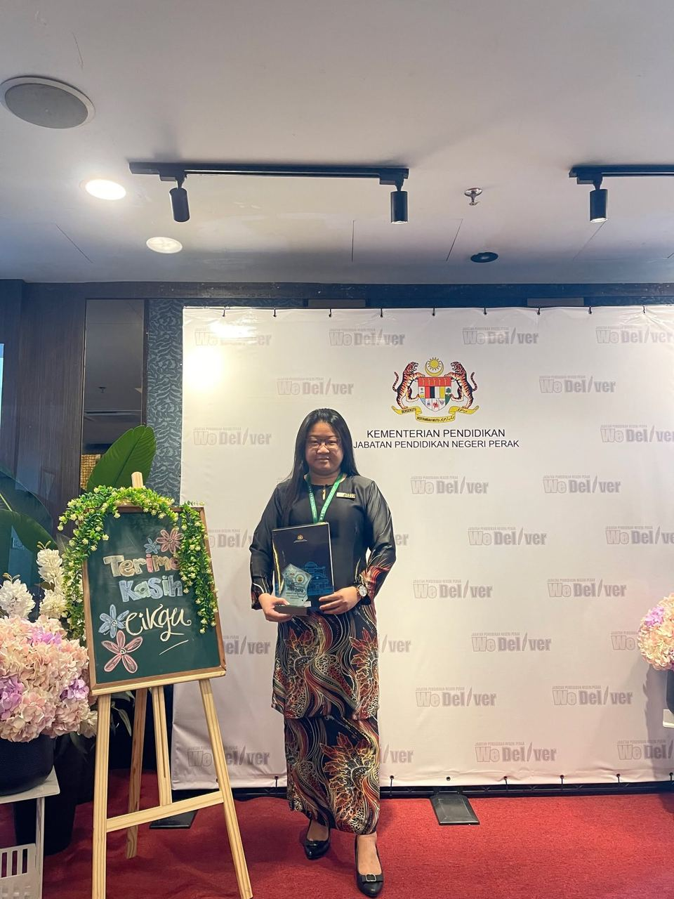
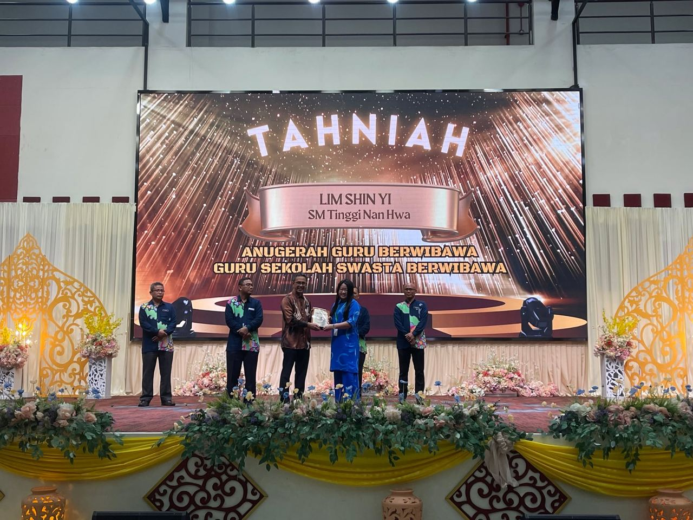
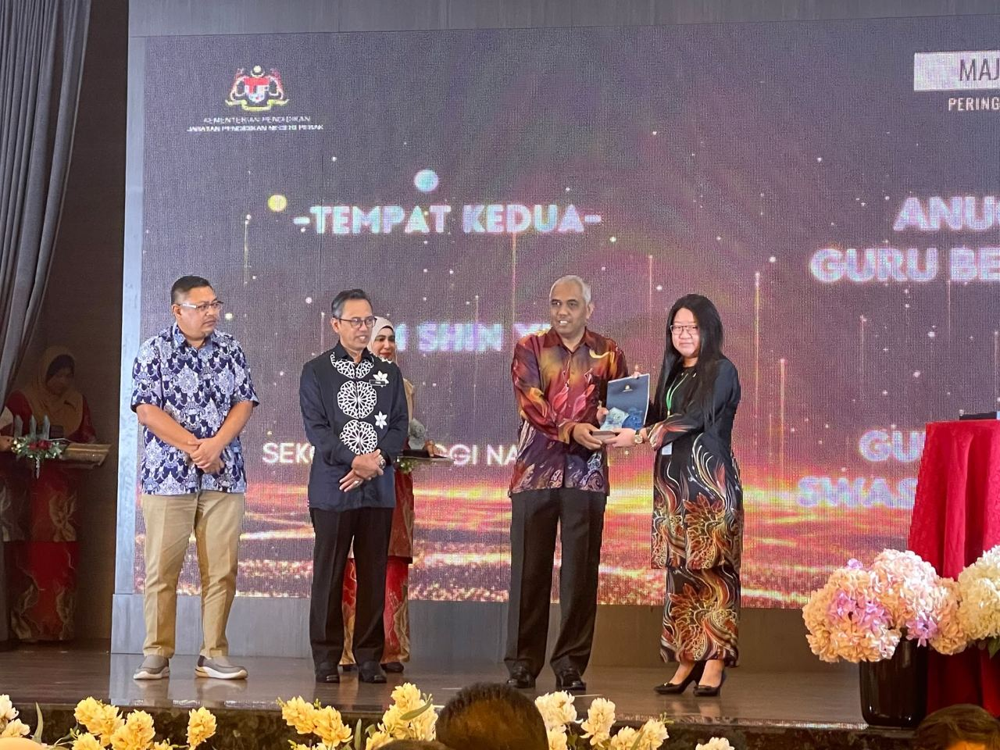
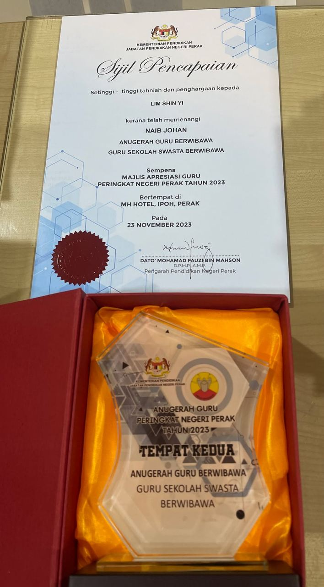
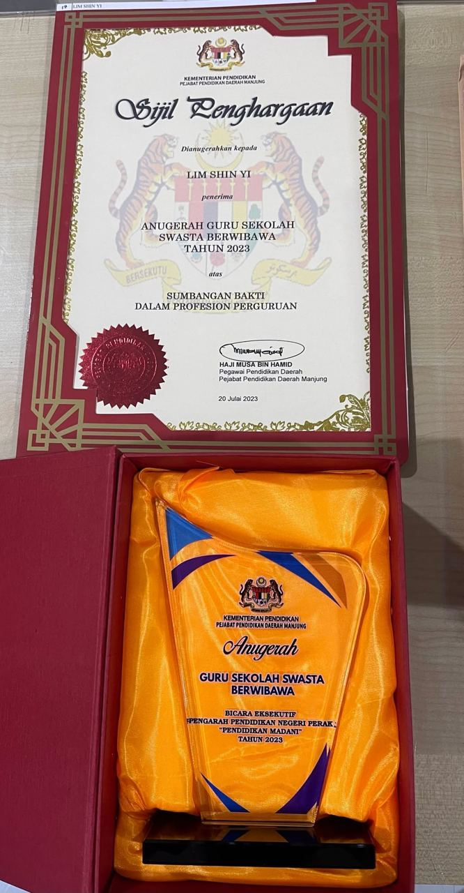
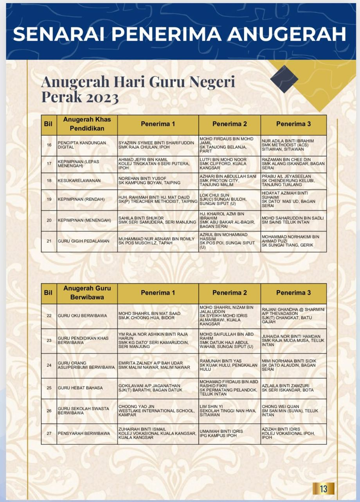
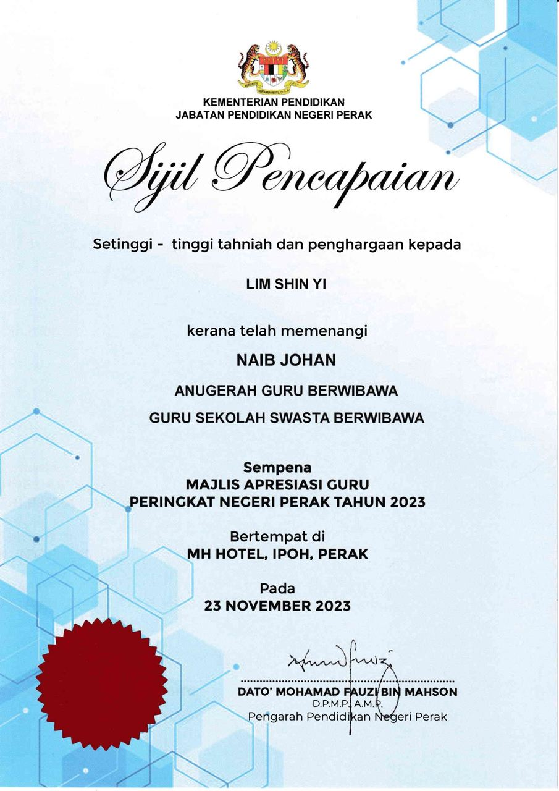

南华独中林欣宜老师
南华独中林欣宜老师
荣获2023年霹雳州教师节私立学校威望教师奖
本校教师林欣宜老师荣获由霹雳州教育局主办的2023年霹雳州教师节私立学校威望教师奖，以表彰她在教育领域的杰出贡献和卓越的教学成绩。
林欣宜老师经过校方推荐后参加曼绒县级，通过初审以后，再由霹雳州教育局派遣官员视察上课情况，进行综合评估后方能成绩出炉。林欣宜老师通过层层关卡，最终斩获此项荣誉。
林欣宜老师毕业于拉曼大学心理学系荣誉学士，于南华独中任教迈入第十年，有丰富的教学经验，授课科目包括有辅导课、国语课以及商业学。林欣宜老师同时也是一位有着丰富行政经验的老师，曾担任任南华独中辅导处副主任、学生事务处副主任，目前为南华独中教务处副主任，身兼班导师一职。
南华独中校长陈丽冰博士为林欣宜老师获奖一事给予高度的肯定，并称赞林老师为学校的付出以及对学生的关爱是有目共睹的，并表示“林欣宜老师的教学方法深受学生和家长的好评，她不仅仅是一位教育者，更是学生们值得尊敬和学习的楷模。”
林欣宜老师受访时表示，首先是要感谢校长的推荐与鼓励，这次获奖不仅仅是个人赞誉，更是对于南华独中给予老师无私的栽培与发挥空间的肯定。林老师强调，南华独中的教学不仅关注语言知识的传递，更注重培养学生的全面素养，激发学生的创造力和领导力。在得知获得威望教师奖的消息时，林欣宜老师激动地表示：“这是我职业生涯中的一大荣耀。感谢学生、家长和同事们的支持，我将继续努力为学生提供优质的教育，培养他们成为有品德、有能力的未来领袖。”
#霹雳州教师节奖 #私立学校威望教师奖 #林欣宜老师
#南华独中 #曼绒 #实兆远







